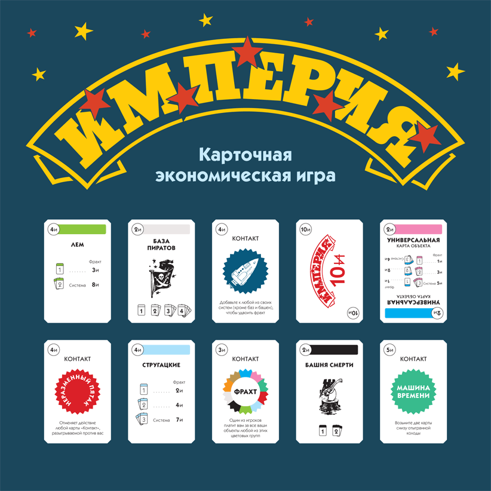

Юрий Шевченко, 25 декабря 2012 г.

Карточная экономическая игра «Империя» по существу является аналогом карточной игры «Монополия Сделка» («Monopoly Deal»), однако обладает своими особенностями и некоторыми преимуществами. Во-первых, на карточную модель игры перенесен антураж классической «Империи», что дает ее любителям ощущение новизны, делает эту игру более современной и динамичной. А во-вторых, карточная «Империя» разрабатывалась с учетом одного большого недостатка ее прототипа. Дело в том, что «Монополия Сделка», будучи действительно интересной и оригинальной игрой, увы, якобы под видом отражения экономических реалий современности откровенно приучает игроков быть нечестными и подлыми, не считаться с ближним в эгоистичной погоне за личным успехом. В то время как «Империя» — это игра не ради азарта и удовлетворения своего тщеславия, а ради здорового общения и приятного времяпровождения в компании не соперников, но друзей, которых не хочется обижать и предавать. Поэтому в карточной «Империи» аналогов некоторых нехороших карт действия «Монополии Сделки» нет вообще, а действие некоторых других исправлено с таким расчетом, чтобы никому не было обидно. В то же время, добавлены совершенно новые, оригинальные карты действия, аналогов которых нет в «Монополии Сделке».
Официального издания этой игры не существует, она полностью самодельная.
Скачать карточный вариант «Империи» можно абсолютно бесплатно.